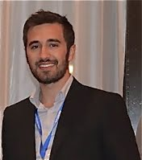
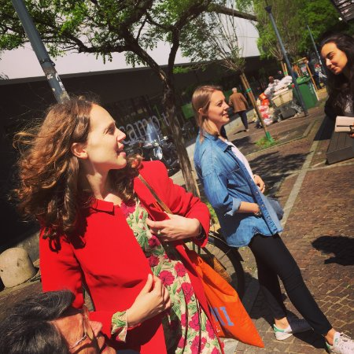
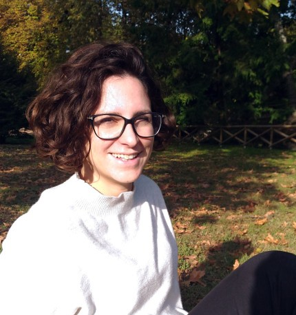
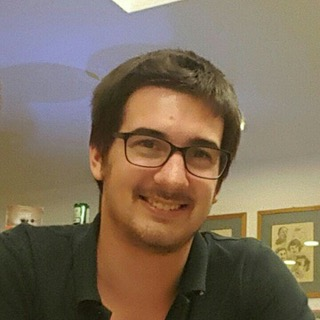

Officers
Daniele Durante (2017-2018) - Coordinator
My name is Daniele Durante, I am currently a Post-doctoral Research Fellow at the department of Statistical Sciences of the University of Padova, where I also obtained my Ph.D. in Statistical Sciences on April 2016, under the supervision of Professors Bruno Scarpa and David B. Dunson. During my studies I appreciated several aspects of the Statistical research, but I gained particular interest in complex data sets and new scientific problems requiring novel methodologies for tractable, flexible and interpretable inference in different fields. This led me to develop new statistical methods in different frameworks, including multivariate stochastic processes, flexible inference on object-type random variables, dynamic modeling of networks and adaptive dimensionality reduction techniques. You can find something more about me, my research and my enthusiasm towards Statistics in my webpage at the link: Daniele Durante.
Anna Calissano (2018-2019) - Secretary
I am Anna Calissano, research fellow at MOX Politecnico di Milano and Phd Candidate “Mathematical models and methods for engineering". I graduated in 2015 in Mathematical Engineering, with a specialization in applied statistics. My research is focused on Text mining and Network Value data. I work in multidisciplinary laboratory for Smart City. Before starting my research experience at MOX, I worked as scientific communication consultant at Otto-Von-Guericke Universitaete in Germany. I am a co-funder of PoliResearch Club.
Ilaria Bianchini (2017-2018)
I am Ilaria Bianchini and I am starting the third year of PhD in "Mathematical models and methods for engineering" at Politecnico di Milano, where I graduated in 2014 in Mathematical Engineering, with a specialization in applied statistics. My research is focused on Bayesian nonparametric models, clustering and biomedical applications. Before starting the PhD, I worked at IMATI-CNR, an institute for applied mathematics and information technologies, where I was part of a project dealing with statistical models for biomechanics. I was member of the local committee of BAYSM, Bayesian young statisticians meeting, held in Florence in June 2016. See my webpage at Ilaria Bianchini.
Saverio Ranciati (2018-2019)

My name is Saverio Ranciati and I am currently based in Bologna at the Department of Statistics, where I've just started my 3rd year post-doc fellowship. I receveid the Ph.D. degree in Statistical Sciences after a joint-double PhD program from both University of Groningen (The Netherlands) and University of Bologna (Italy). My interests lie in model-based clustering, mixture models, penalized regression, differential equations, and - most recently - network models. I work mainly in the Bayesian paradigm and I am fascinanted by the computational aspect of implementing statistical techniques. I also enjoy teaching Statistics, as I feel it gives you deeper understanding on your own perspective on the subject and polishes communication skills. You can find my personal website at: Saverio Ranciati.
Tommaso Rigon (2017-2018)
My name is Tommaso Rigon and I am currently a Ph.D. student in Statistics, at Bocconi University. I received a Bachelor Degree in “Statistics, Economics and Finance” from the University of Padova in 2013 and after also a Master degree in “Statistical science”, in 2015, with a thesis entitled “Functional telecommunication data: a Bayesian nonparametric approach”. I mostly work on topics related to Bayesian nonparametrics and computational statistics; however -as for life- statistics is beautiful because is varied and I am interested also in other topics, including statistical applications, machine learning and statistical theory. For more information about myself, visit my webpage at Tommaso Rigon.